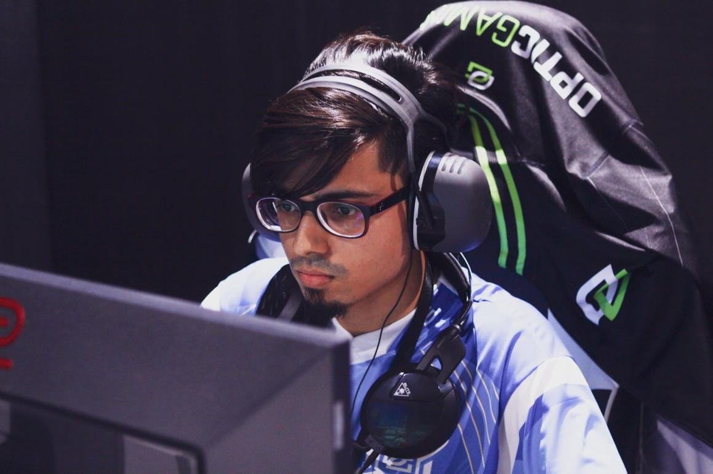

A informação chegou a público nesta segunda-feira (22), pelo Twitter da ESL India. Além do próprio forsaken, todos os 20
participantes da Premiership também estão sendo analisados. Afinal, se um conseguiu se aproveitar de hacks, outros
também podem.
Foto: OpTic/Reprodução
O episódio em que Nikhil "forsaken" Kumawat foi pego usando hack em um evento presencial, pode ser apenas a ponta de um grande iceberg. Em investigação recente feita pela ESL India, a organizadora de torneios achou o mesmo programa malicioso nos arquivos guardados pelo jogador durante a ESL India Premiership.
A informação chegou a público nesta segunda-feira (22), pelo Twitter da ESL India. Além do próprio forsaken, todos os 20
participantes da Premiership também estão sendo analisados. Afinal, se um conseguiu se aproveitar de hacks, outros
também podem.